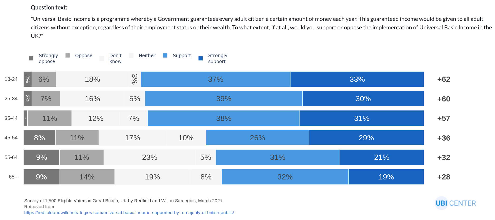

Introducing the UBI Poll Tracker
Try it out at polls.ubicenter.org
How does the public feel about universal basic income? How does this vary by country or demographics? Does the phrasing and context of the question affect public opinion?
As UBI has become more newsworthy—through political campaigns, pilots, and pandemic response policies—pollsters have researched these questions at length. While these single surveys reveal valuable insight, we sought to follow poll aggregators like FiveThirtyEight and show a broader representation, across time and demographics, of attitudes toward universal basic income.
Constructing the dataset
We started by building a structured dataset of all known UBI favorability polls from reputable pollsters. For each poll in the dataset, we’ve included relevant cross-variables offered by the pollster, such as age, race, income level, and political affiliation. At this time, our dataset represents 30 unique polls from at least 30 different countries, primarily in the EU and US, comprising 13,000 total cells of data. If you see a poll we’ve missed, please submit it for us to add.
To help the public glean insights from this dataset, we created the UBI Poll Tracker.
The UBI Poll Tracker
The UBI Poll Tracker starts with a bubble chart of all polls in our dataset over time. On the y axis is net favorability, or the percentage that supports the policy minus the percentage that opposes it. Each bubble represents a unique poll question, colored by country, and hovering reveals details on the poll question. You can also filter the chart by country or demographics. Our demo video below walks through an example:
The lower chart shows more detail on individual polls. By default, it shows the most recent poll, but you can click a bubble or select a poll with the drop down menus to see a different one. Let’s stick with the most recent poll, which is from Data for Progress. 32 percent of respondents strongly supported monthly payments of $500 to $1,000, and 23 percent somewhat supported this policy. 12 percent somewhat opposed it and 27 percent strongly opposed it, for a net favorability rating of plus 12. This poll had only one question, but it showed cross-tabs breaking down results by partisanship, gender, and race. Selecting race reveals that UBI is much more popular with Black and Hispanic Americans than with White Americans.
For a deeper look, you can download our poll data as a CSV or explore our GitHub repository.
Trends revealed by the UBI Poll Tracker
The UBI Poll Tracker reveals remarkable variation in public opinion around basic income, across countries, demographic groups, time, and question framing.
Perhaps the most consistent source of variation is political ideology: across countries and polls, liberals support UBI more than conservatives. The most recent UK poll found net favorability of +17 among those who most recently voted Conservative, and +57 among those who most recently voted Labour; the other four UK polls that sliced by party found almost an identical 40-point spread. Party differences are even starker in the US: the most recent poll, from Data for Progress, found +56 support among Democrats and -31 support among Republicans, and a Pew poll from August 2020 found +33 support among Democrats and -56 support among Republicans. This represents similar consistency as the UK polls, but of twice the magnitude.

Other correlates to political affiliation also predict UBI support, notably age and race. A cross-country 2019 poll from Gallup found that adults aged 18 to 29 had net favorability 30 to 50 points higher than adults aged 65 or older. The latest US poll from Data for Progress finds net favorability of +66 among Blacks, +58 among Hispanics, and +2 among Whites. Even among Democrats in New York City, net favorability was ten points higher among Blacks than Whites.

Meanwhile, some splits are either too small or too sparse to identify. In recent polls, sentiment among men is within one to eight points of sentiment among women, sometimes in different directions. Opinion is similarly ambiguous by education, though the swings are larger. More polling outside the US and the UK is needed to establish geographic differences, though the UK consistently supports UBI more than the US. And while existing data suggests some clues around verbiage that elicits more or less support—Gallup finds that net favorability falls by over 50 points across countries when asked about paying higher taxes—more polls that consistently vary the verbiage would reveal this more clearly.
Next steps
We’ll keep enhancing the UBI Poll Tracker by expanding the set of polls, improving useability, and adding features to analyze multiple polls together and identify general trends. Please file an issue on GitHub if you see a poll we’ve missed or find a bug, and feel free to reach out at contact@ubicenter.org if you’d like to partner. We look forward to seeing what trends our users find!
Subscribe to the UBI Center
Get the latest posts delivered right to your inbox